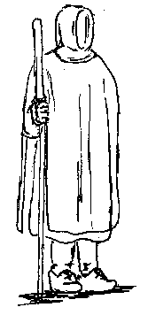

The museum display prior to the 1978-81 Conservation.Return to Contents
Some Clothes of the Middle Ages -- The Bocksten Bog Man -- The Background, by I. Marc Carlson, Copyright 1996 This code is given for the free exchange of information, provided the Author's Name is included in all future revisions, and no money change hands-